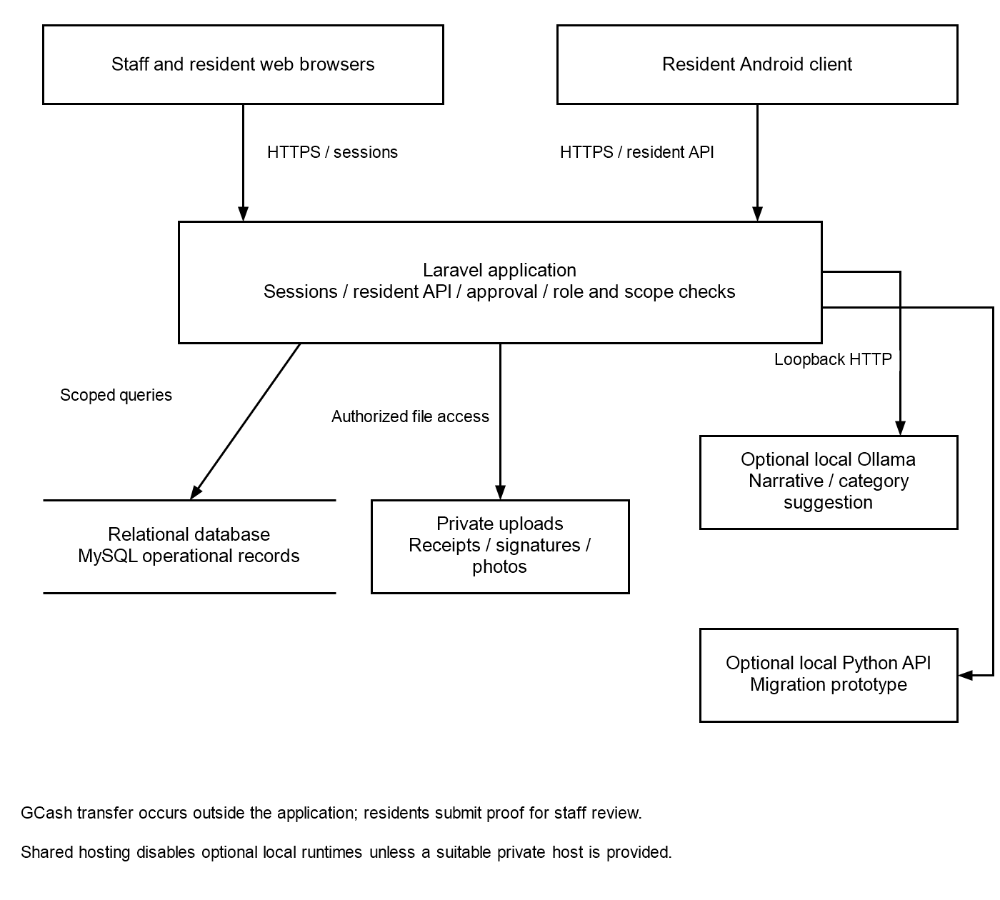
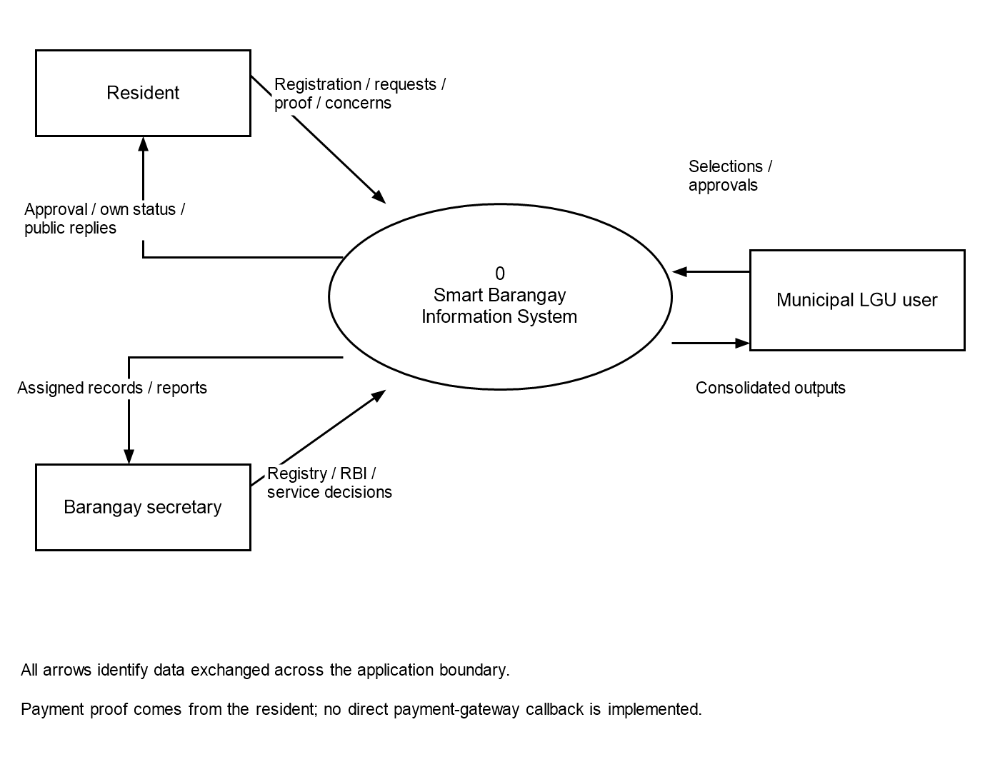
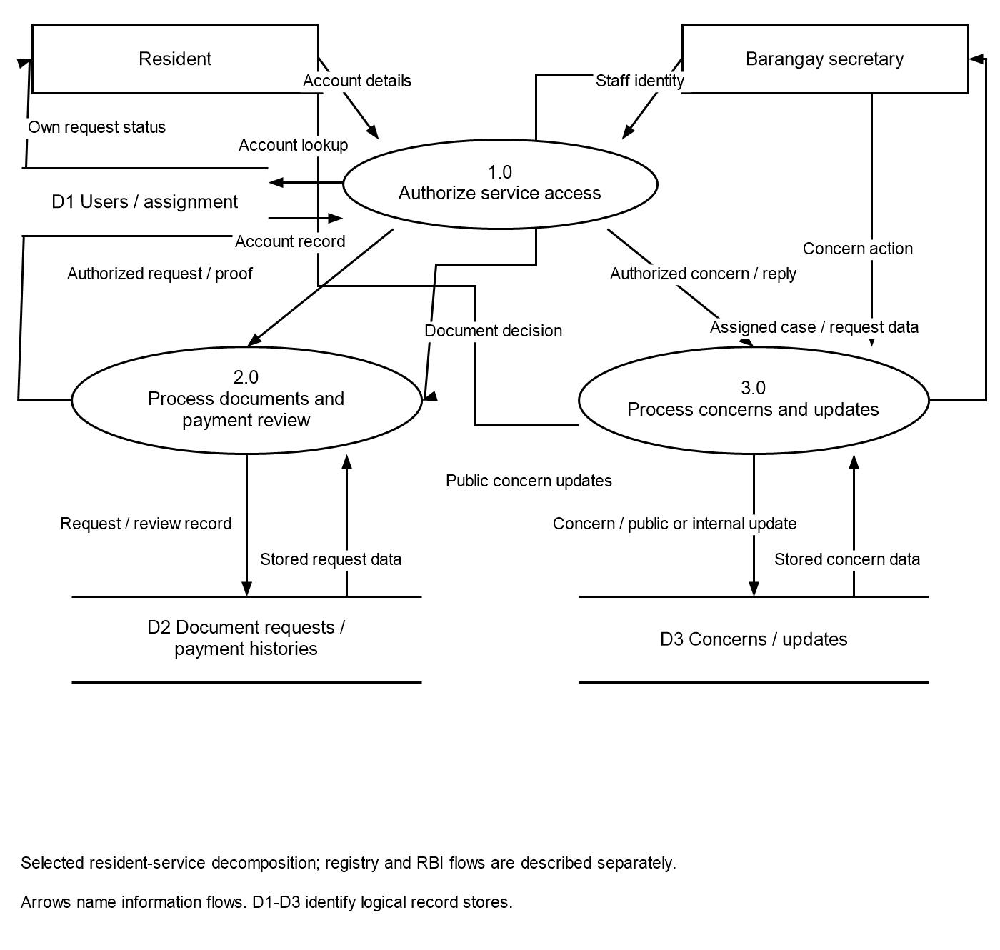
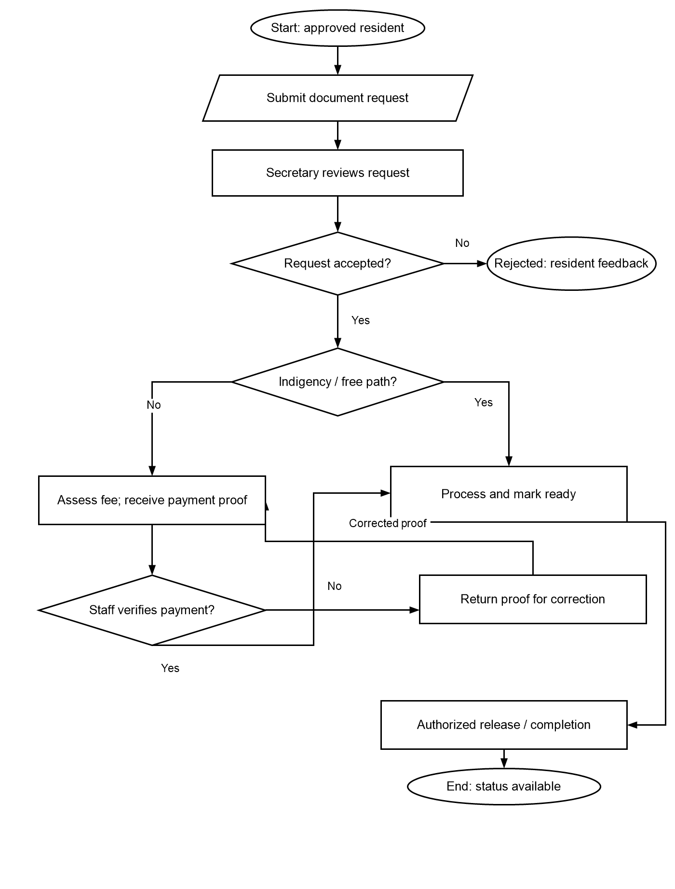
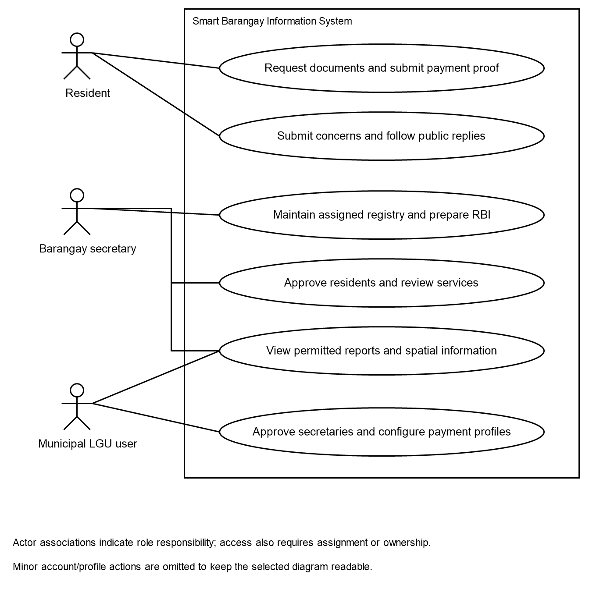
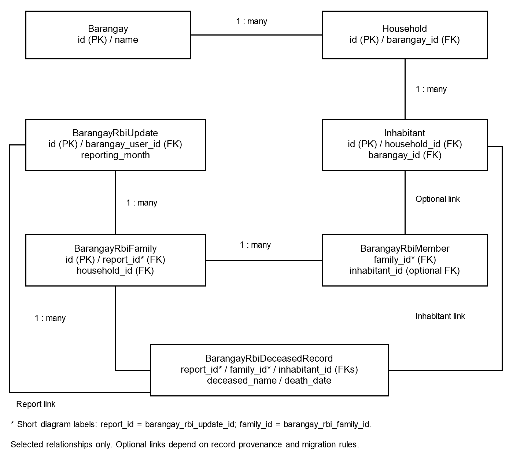

SMART BARANGAY INFORMATION SYSTEM FOR POPULATION AND GOVERNANCE MANAGEMENT
FIGURES, TABLES, AND DIAGRAMS
Based on the current application implementation
October 2026
The figures describe the current Smart Barangay Information System for Population and Governance Management. They are reconstructed from application routes, controllers, models, and services. The configured setting is Tomas Oppus. This package contains system documentation only; it does not establish field deployment, client acceptance, or statistical evaluation results.
Figure 1 shows the browser and resident Android interfaces, the Laravel access boundary, database, private storage, and optional local services. GCash transfer is performed separately by the resident; the application stores proof for authorized staff verification.

Optional local services depend on the deployment host. Shared-hosting configuration disables these services unless a compatible private runtime is available. Database summaries and manual review remain authoritative.
Figure 2 represents the system as one process exchanging information with residents, assigned barangay secretaries, and municipal users. Data-flow labels describe information crossing the application boundary.

The diagram excludes internal data stores and application components. Payment proof originates from the resident; there is no implemented payment-provider callback shown.
Figure 3 shows a selected resident-service decomposition for authorization, documents and payment review, and concerns. It identifies the relevant account, document/payment, and concern stores. Registry and RBI flows are outside this selected diagram.

This is a selected service model, not a complete balanced decomposition of every context-diagram flow. Staff decisions and resident submissions are scoped by current authorization, assignment, and ownership.
Figure 4 shows the document workflow from an approved resident's request to staff review and release. Indigency follows the application's free-document path. Other supported documents require fee assessment and verified payment before paid release conditions are met.

Submitting a receipt does not mark a request paid. Staff review can return proof for correction, and a rejected request ends with feedback to its resident owner.
Figure 5 groups principal business use cases by resident, barangay secretary, and municipal LGU responsibilities. Reporting and mapping are shared by permitted staff roles. Other account and administration actions are omitted for readability.

Actor associations show responsibility. Each action also requires its implemented approval, barangay-assignment, and record-ownership conditions.
Figure 6 shows selected household, inhabitant, monthly RBI, family, member, and deceased-report relationships. PK means primary key; FK means foreign key. Short relationship-field labels are expanded in the figure note.

Deceased report entries link to a monthly report and may link to a family or inhabitant. The complete schema also includes accounts, movement events, requests, payment history, concerns, updates, and offline synchronization records, summarized in Table 4.
| Role | Main permissions | Access boundary |
|---|---|---|
| Municipal LGU | Approve secretary accounts; manage barangay payment profiles; monitor RBI, population, migration, concerns summaries, and spatial information | Municipal oversight; concern summaries do not grant unrestricted case-detail access |
| Barangay secretary | Maintain registry and RBI; approve residents; process assigned documents, payment reviews, and concerns; view reports and mapping; synchronize household coordinates | Approved account and assigned barangay; record-level checks apply |
| Resident | Submit and track own documents; provide payment proof; submit concerns and public follow-up replies; use connected resident Android services | Approved resident account; own records and current barangay |
Table 1 describes the application's three operational roles. Interface visibility is supplemented by backend permission and scope checks.
| Module | Principal input or activity | Output |
|---|---|---|
| Accounts and approvals | Registration, login, approval, assignment | Role workspace and current account status |
| Inhabitant registry | Demographics, household/family identifiers, residence updates | Assigned registry lists and selected activity history |
| New and deceased records | Verified source information and dates | New-inhabitant consolidation and deceased records |
| Monthly RBI | Families, members, deceased entries, reporting dates, certification | Submitted reporting history; printable/PDF/Word documents |
| Population reporting | Permitted scope and encoded registry values | Record, household, family, age, sex, senior, PWD, and coverage summaries |
| Migration monitoring | Dated in/out movements and reporting year | Trends, event totals, net movement, PDF reports, conditional estimate |
| Documents and payments | Request purpose, date, fee assessment, proof, staff decision | Request status, payment status, review and collection history |
| Resident concerns | Category, narrative, optional photo, replies, staff updates | Case history and public replies; aggregate monitoring |
| GIS and offline capture | Household coordinates, layers, offline identifier | Scoped map and later coordinate synchronization |
| Resident Android | Authenticated resident API requests | Connected document, concern, and account workflows |
| Optional local assistant | Supported question and authorized database summary | Database answer; optional locally generated explanation |
Table 2 summarizes implemented functions. Output availability depends on role, data completeness, and deployment configuration.
| Technology | Repository version evidence | System role |
|---|---|---|
| PHP / Laravel | PHP 8.2+ requirement; Laravel 12.69 series constraint | Backend application, validation, authorization, and data access |
| MySQL / Eloquent | MySQL configured default; exact host version to confirm | Operational relational storage and model relationships |
| Blade / JavaScript | Project views and browser scripts | Forms, dashboards, interactive workflows |
| Tailwind CSS / Vite | Tailwind 4 series; Vite 8 series | Frontend styles and production assets |
| Sanctum | Version 4 series | Authenticated resident mobile API |
| Laravel Dompdf | Version 3.1 series | PDF exports |
| Leaflet | Locally bundled assets | Geographic map presentation |
| Service worker / IndexedDB | Offline page and household-capture scripts | Limited offline capture and pending-entry storage |
| Java / Android SDK | Android 8.0+; compile SDK 35; AGP 8.9.2 | Native resident client |
| Ollama / Qwen | Documented pilot: Ollama 0.34.0; qwen2.5:1.5b | Optional local narrative and category suggestions |
| Python / Flask / scikit-learn | scikit-learn 1.6.1 pin | Local migration prototype API |
| PHPUnit / SQLite | PHPUnit 11 series; isolated SQLite tests | Technical verification without changing operational data |
Table 3 reports project package constraints and documented runtime evidence. It does not assert exact versions installed on a future deployment host.
| Entity or table | Purpose | Principal relationship |
|---|---|---|
| barangays | Configured barangay directory and official/payment details | Has users, households, inhabitants, and movement records |
| users | Account identity, role, approval, and assignment | Optional barangay assignment; service ownership |
| households | Household identifier, address, and coordinates | Belongs to barangay; has inhabitants |
| inhabitants | Central registry and residence information | Belongs to barangay and household; optional resident account |
| new_inhabitants | Pending or recorded new-inhabitant workflow | May link to consolidated inhabitant and submitted report |
| deceased_inhabitants | Central deceased registry information | Separate deceased-record workflow |
| migration_records | Dated movement events and source/destination | Linked inhabitant, barangay, and recording user |
| barangay_rbi_updates | Monthly reporting and certification metadata | Linked preparer; has reporting families and deceased entries |
| barangay_rbi_families | Family rows within an RBI report | Belongs to report; optional household link; has members |
| barangay_rbi_members | Member rows in a reporting family | Belongs to reporting family; optional inhabitant link |
| barangay_rbi_deceased_records | Deceased name, death date, and reporting position | Report link; optional family and inhabitant links |
| document_requests | Service and payment workflow state | Resident owner, barangay, and optional inhabitant |
| document_payment_histories | Recorded payment-review history | Associated request and review context |
| resident_concerns | Concern narrative, category, status, and version | Resident owner and assigned barangay |
| concern_updates | Public/internal messages and staff updates | Associated concern and author |
| registry_activities | Selected recorded registry changes | Recording user and affected registry context |
| household_offline_syncs | Receipt for an offline synchronization identifier | Linked household |
Table 4 is a documentation summary of principal entities, not an exhaustive column-level data dictionary. Framework session, queue, password-reset, and token tables are omitted.
| Workflow | Input | Process and control | Output |
|---|---|---|---|
| Registry / RBI | Validated inhabitants, families, dates | Scope checks; relationship handling; reviewed consolidation and submission | Registry and monthly report |
| Population / migration | Scope, period, available records | Defined grouping and event counts; coverage/unknown values retained | Scoped summaries and exports |
| Documents / payments | Own request and proof; staff assessment | Approval and ownership; assessed fee; manual payment verification | Separate request and payment state |
| Concerns | Narrative, category, optional image | Owner/assignment checks; valid transitions; update version; visibility | Public reply and staff case history |
| Mapping / offline | Coordinates and unique offline identifier | Range and scope checks; online boundary check; consistent retries | Household point and sync confirmation |
| Local services | Supported summary or aggregate features | Local endpoint restriction; validated output; manual/database/baseline fallback | Optional explanation, suggestion, or prototype estimate |
Table 5 connects data entry to its resulting output and the controls applied. The online map path has a boundary check; offline synchronization should not be assumed to have every identical geographic check.
| State group | Stored value | Meaning |
|---|---|---|
| Document | pending | Awaiting staff review |
| Document | processing | Staff processing the service |
| Document | ready | Ready for release through the authorized workflow |
| Document | completed | Recorded as completed |
| Document | rejected | Service request rejected with applicable feedback |
| Payment | awaiting_assessment | Secretary has not yet assessed the fee |
| Payment | not_required | Free-document path |
| Payment | unpaid | Applicable assessed payment still required |
| Payment | pending_verification | Proof or payment information awaiting staff verification |
| Payment | paid | Recorded as verified by authorized staff |
| Payment | rejected | Payment proof or information needs correction |
Table 6 separates document status from payment status. Indigency is free in the current application; other supported documents require assessment and paid-release checks. Application configuration does not establish the legal authority for any particular fee.
| Current status | Allowed next statuses | Interpretation |
|---|---|---|
| submitted | under_review; closed | Received concern enters review or is closed |
| under_review | in_progress; resolved; closed | Staff review determines the recorded next step |
| in_progress | under_review; resolved; closed | Work continues, returns to review, or concludes |
| resolved | under_review; closed | Resolved concern can be reviewed again or closed |
| closed | under_review | Closed concern may be reopened for review |
Table 7 lists permitted changes from the ResidentConcern model. Keeping the same current status is also supported when recording an applicable update. A local AI category suggestion does not change the concern's status or resolve it.
| Measure | Computation or interpretation | Limitation |
|---|---|---|
| Registered records | Count encoded inhabitant rows in scope | Not a certified census or only confirmed current residents |
| Confirmed living here | Active status and recorded residence-here status | Depends on verified residence encoding |
| Households | Group base household identifiers within barangay | Decimal family suffixes are not extra base households |
| Families | Distinct encoded family numbers plus implemented single-person rule | Missing family identifiers remain incomplete |
| Age / sex groups | Derive from valid birth dates and encoded sex values | Unknown or invalid values remain separate |
| Senior / PWD summaries | Recorded age and/or supported registry markers | Administrative encoding is not independent eligibility verification |
| In-migration / out-migration | Count dated event records by type and selected period | Events are not necessarily unique persons |
| Net movement | In-migration events minus out-migration events | Not total population growth |
| Baseline estimate | Average out-event count for three completed source months | Months without records are filled with zero; completeness must be verified |
| Prototype model estimate | Local model result from aggregate features | Training provenance and forecast accuracy are not established |
Table 8 defines the unit and meaning of the system's measures. It prevents report counts and analytical estimates from being interpreted more broadly than their recorded data support.
| Control area | Implemented arrangement | Practical boundary |
|---|---|---|
| Authentication | Sessions for web; resident API tokens for Android | Correct credentials do not override role or approval |
| Jurisdiction / ownership | Assigned barangay and resident-record checks | Downloaded exports still need controlled handling |
| Private uploads | Authorized retrieval for receipts, signatures, and concern photos | Host file permissions must be verified |
| Concern visibility | Public messages separated from internal notes | Municipal aggregate view differs from case detail |
| Consistency | Transactions in selected updates; concern versions; offline identifiers | Not a claim of universal audit or conflict coverage |
| Local services | Literal loopback restrictions and no intended cloud fallback | Valid model output still requires semantic review |
| Offline operation | Limited capture, pending state, local clearing workflow | Device storage and unsent work require care |
| Recovery | Documented backup and restoration procedure | Actual restoration result requires operational evidence |
Table 9 describes available controls without claiming complete security or successful production recovery.
| Verification | Recorded October 10, 2026 result | Evidence boundary |
|---|---|---|
| PHP application suite | 265 tests; 3,735 assertions passed | Local PHP 8.5 and in-memory SQLite; historical release result |
| Offline household JavaScript | 15 tests passed | Logic checks; phone field behavior remains separate |
| Python prediction API | 4 tests passed | Interface and validation; not predictive accuracy |
| Frontend production build | Passed | Compiled Vite assets |
| Route and view compilation | Passed | Application compilation checks |
| Packaged route smoke checks | Selected routes 200; Laravel /.env route 404 | Does not prove actual web-server file protection |
Table 10 reproduces the project's internal release-verification record. No participant rating, deployment success, or fresh full-system test result is implied.